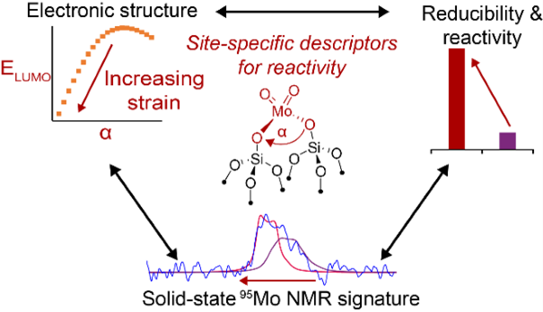

Stefan Philipp Schmid
Publications
|  |
Active Site Descriptors from 95Mo NMR Signatures of Silica-supported Mo-based Olefin Metathesis Catalysts |
To the Publication |
|
Elucidation of radical- and oxygenate-driven paths in zeolite-catalysed conversion of methanol and methyl chloride to hydrocarbons |
To the Publication |